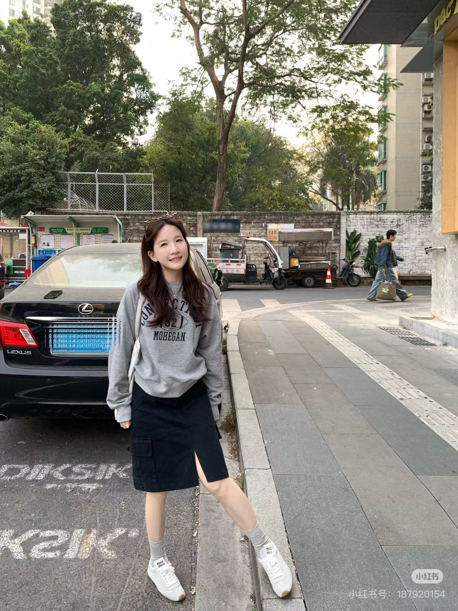
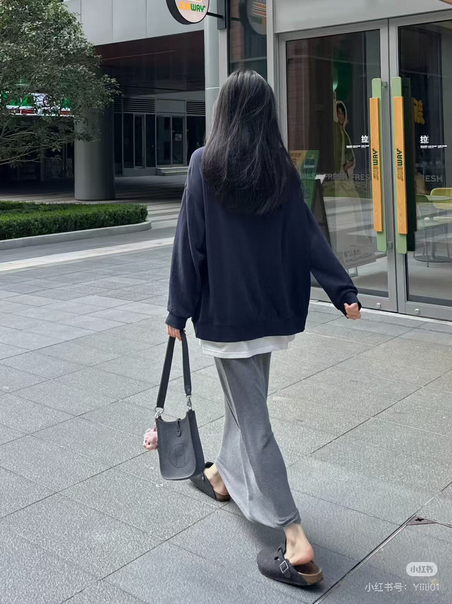
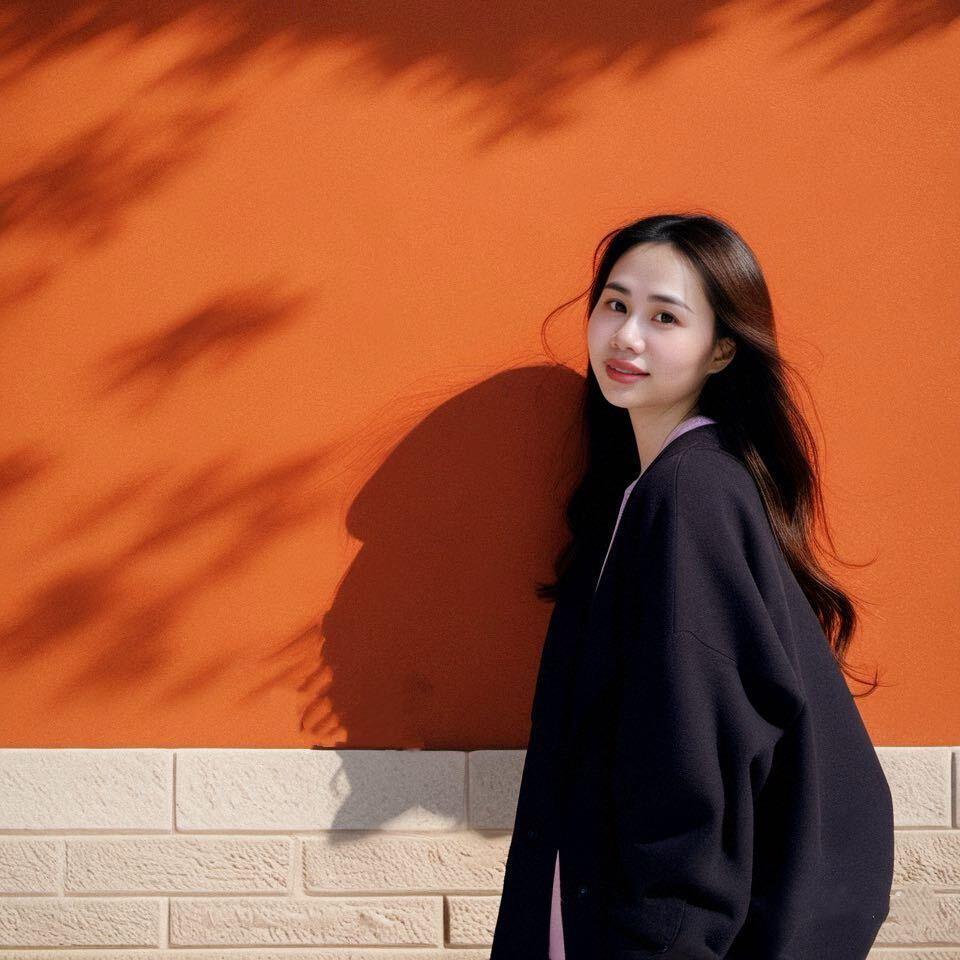

穿搭作品

春日温柔系通勤穿搭 — 奶油色系衬衫 + 半身裙，温柔又干练的职场穿搭，适合 155-165cm 小个子女生。

日系休闲周末穿搭 — 宽松卫衣 + 牛仔裤 + 帆布鞋，舒适自在的周末出街 look，慵懒又有氛围感。

夏日清新连衣裙合集 — 5 条百元平价连衣裙分享，涵盖法式、森系、甜美多种风格，显瘦不挑身材。

秋冬叠穿技巧分享 — 基础款也能穿出层次感，教你用 3 件单品打造 7 套不同的秋冬穿搭。
日系穿搭博主 | 分享日常温柔感穿搭与生活好物
你好，我是啊静，喜欢记录轻松舒服又有氛围感的穿搭灵感，也热爱分享平价好物与治愈系生活日常。

啊静 / 日系穿搭博主
专注分享通勤、休闲、校园、约会等全场景日系穿搭，用温柔的配色与实穿的搭配思路，帮助小个子女生穿出轻松、显高又有质感的日常风格。
春日温柔系通勤穿搭 — 奶油色系衬衫 + 半身裙，温柔又干练的职场穿搭，适合 155-165cm 小个子女生。

日系休闲周末穿搭 — 宽松卫衣 + 牛仔裤 + 帆布鞋，舒适自在的周末出街 look，慵懒又有氛围感。

夏日清新连衣裙合集 — 5 条百元平价连衣裙分享，涵盖法式、森系、甜美多种风格，显瘦不挑身材。
秋冬叠穿技巧分享 — 基础款也能穿出层次感，教你用 3 件单品打造 7 套不同的秋冬穿搭。
欢迎来找我交流穿搭灵感、合作分享与日常好物。
邮箱：315665879@qq.com
小红书：@啊静穿搭日记
微博：@啊静的日常
抖音：@啊静穿搭